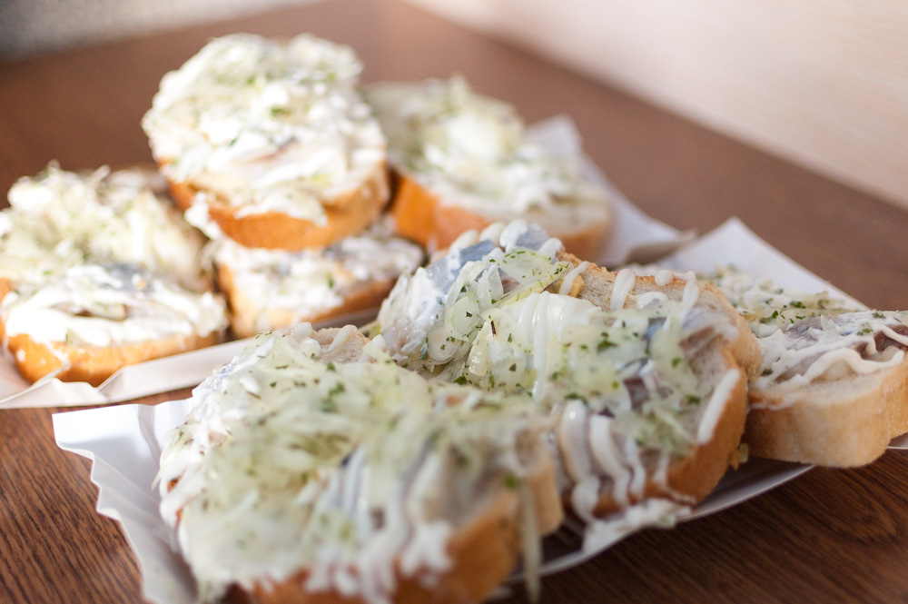

Cieszyn, malownicze miasto na granicy Polski i Czech, zaprasza do odkrycia swojego unikalnego uroku i bogatej historii. Znane jako "Perła Śląska", Cieszyn to fascynujące miejsce, gdzie polskie, czeskie i niemieckie wpływy splatają się w harmonijną mieszankę kulturową.
Stare Miasto w Cieszynie oferuje wąskie uliczki, które przeniosą Cię w czasie. Zachwyć się pięknymi kamienicami, które łączą historyczną architekturę z nowoczesnym życiem. Zabytki, takie jak kościół św. Mikołaja w stylu romańsko-gotyckim czy neogotycka wieża ratuszowa, są obecne w całym mieście i przenoszą nas w przeszłość.
Miłośnicy natury będą zachwyceni okolicznymi krajobrazami. Cieszyn leży u stóp Beskidu Śląskiego i pięknego pasma górskiego. Wyprawa na pobliskie szlaki górskie zapewni niesamowite widoki na przyrodę, zielone doliny, a zimą idealne warunki do uprawiania sportów zimowych. Spacer wzdłuż rzeki Olzy, która dzieli miasto na dwie części, polską i czeską, po jednym z licznych mostów, to niezapomniane doświadczenie.


Zwiedzanie Cieszyna to prawdziwa gratka dla miłośników architektury i historii. W samym centrum miasta znajduje się piękny Rynek z ratuszem oraz liczne kamienice z unikalnymi zdobieniami. Na szczególną uwagę zasługuje Zamek Cieszyn, który dominuje nad miastem i oferuje wspaniałe widoki na okolicę. Warto również odwiedzić Muzeum Śląska Cieszyńskiego, gdzie można poznać fascynującą historię regionu i jego kultury. Spacer po malowniczym Parku Zamkowym, otaczającym zamek, to doskonały sposób na relaks i kontemplację piękna przyrody.
Cieszyn jest otoczony pięknymi terenami przyrodniczymi, które zachęcają do aktywnego wypoczynku na świeżym powietrzu. Niezależnie od pory roku, miasto i jego okolice oferują wiele możliwości do spędzenia czasu na relaksie i kontaktowaniu się z naturą.
Wokół Cieszyna rozciągają się liczne szlaki turystyczne, które prowadzą przez urocze pagórki, lasy i malownicze doliny. Wędrowcy i amatorzy pieszych wycieczek mogą odkryć urokliwe zakątki regionu, ciesząc się ciszą i spokojem natury. Szlaki te są różnorodne pod względem trudności, co oznacza, że zarówno początkujący, jak i bardziej doświadczeni turyści znajdą odpowiednie trasy dla siebie.
Miłośnicy aktywności rowerowych również znajdą wiele możliwości do eksploracji. Cieszyn i okoliczne tereny oferują różnorodne trasy rowerowe, które prowadzą przez malownicze krajobrazy i przepiękne widoki. Wędrując ścieżkami wzdłuż rzeki Olzy lub pedałując po wzgórzach, rowerzyści mogą odkrywać piękno natury, ciesząc się jednocześnie aktywnością fizyczną.

Cieszyn to również raj dla miłośników dobrej kuchni. W licznych restauracjach i kawiarniach można skosztować tradycyjnych potraw śląskich, które zachwycają swoim smakiem i autentycznym charakterem. Polecamy spróbować kiełbasy śląskiej, pierogów śląskich z mięsem lub kapustą, żurku - tradycyjnej zupy na zakwasie, oraz pysznych kanapek cieszyńskich. Smakosze docenią również lokalne wyroby cukiernicze, takie jak słynne cieszyńskie ciastka o smaku migdałów.